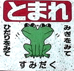
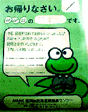

私も入っています。。全国かえる奉賛会 全国かえる奉賛会に入会するには、ご自分のホームページに、上のバナーを貼り付けるだけだ。どんどん入会しましょー。大王様に会うには、上の絵をクリック。ずずっと奥に写真館があるぞ。 |
|
【かえる古新聞】
|
|
【カエル速報】 1.カエルグッズ 2.カエルリンク 3.国家健全化計画 4.謎の髭男 5.とっくりくん 6.街頭で見た蛙 7.カエルショップ 8.奉納カエル絵馬 9.カエル・コスプレ 10.カエルな表紙 |
| 大王様へのメール |
奉賛会推薦菓子
かえる饅頭 この欄に紹介するカエル物品や書籍についての情報を待っています。みんなで、掘り起こそう、かえる土産。かえる産品を奨励しよう！使うほど安く良くなるカエル品 |
|
|
全国の役所もカエル化相次ぐ
|
 |
|
 |
『受信料納入のお願い』に来たものの、幸運にも不在でだった場合、受信料の徴収人が、郵便受けに不在者あてのメッセージを残すことは知られている。しかし、今回は、このメッセージカードのキャラクターが、蓮の葉に座り、シャツを着たカエル君になっていたのだ。『お帰りなさい。本日は受信料の件でお伺いしましたが、お留守でしたので、あらためて訪問させていただきます』と、カエル君がメッセージを述べている。
通報者は、某国営放送局への受信料支払いはともかくとして、『とにもかくにも大王さまに報告』してきた。実は大王様は、某国営放送局への受信料支払いについては『本多勝一さんが支払ったら、私も支払う』という主義を貫いているので、受信料徴収の人々には、なにかとご苦労をかけているのだが、こんな訪問カードもらったら、心が動いてしまう。。。
でもでも、カードもらうには、努めて不在にしておかねばならぬであろう。許せ、某国営放送局の受信料徴収担当者よ。あなたがたに直接会うことはしたくないが、大王様のところにも、カエル不在者通知カードを置いていってくれー
墨田区では横断標識に！
【東京発=けろすけ同志記者の知人特電】墨田区にカエルの絵の描かれた横断歩道があるとかって話しで、写真を送ってもらったなり。これが問題の写真で、かえるがきょろきょろしているのである。
全国かえる奉賛会が提唱する、日本国土の一億総かえる化推進を占うような、きょろきょろカエルである。公共施設のカエル化が進めば、国民の間に、カエル意識の浸透が図られることうけあいである。東京都のほかの区役所も墨田区に続こう！！
ひろあき同志に感状
【全国かえる奉賛会】全国かえる奉賛会は、印南町のかえる饅頭、清酒かえるの里を入手してレポートをよせていただいた、ひろあき同志記者に対して、感状を授与した。この感状は、１回作ると大王様の睡眠時間が大幅に減ってしまうので、なるたけ発行したくないのであるが(笑)、度重なる現地レポートは、全国かえる奉賛会の会員たちに勇気と希望をもたらせたので、ここにめでたく授与するものなり。なお、感状の授与は、けろすけ同志、とんぼ同志に続いて３人目だ。
次号、かえる神社情報スクープ！
【埼玉発=謎の大学院生】私は埼玉県民なのですが、以前からげこげこ大王様のHPを 毎日かかさず読んでいましたそしたら何と！！！埼玉にかえる神社が！？すぐさま支度し、昨日の祝日に長瀞にいってきました。
写真到着を待つ！！
【げこげこ大王】４月２５日号で埼玉の長瀞「かえる神社」についての情報を呼びかけたところ、さっそく謎の大学院生が、現地取材に飛んだのだ。すごいぞー。謎の大学生。毎日、郵便受けをのぞいて写真の到着をまっているぞ。カエルリンクを増強中
カエルリンクを着々と拡張中であるが、とっぴょうしもないカエルなページを見つけた人は、連絡してください。リンクに加えるなりよー。| 写真の説明＝上が墨田区のきょろきょろカエル標識。下が、某国営放送局が置いていった、かえるな不在者へのメッセージ。全国の公共機関を中心に、カエル化が着々と進行しつつある。 |